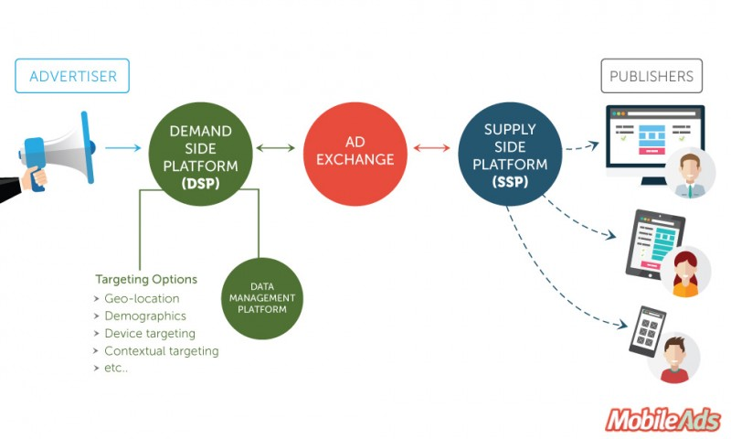
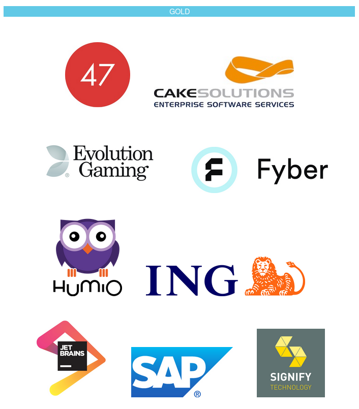
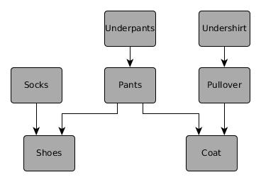
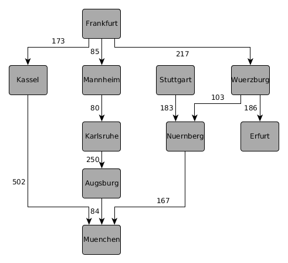
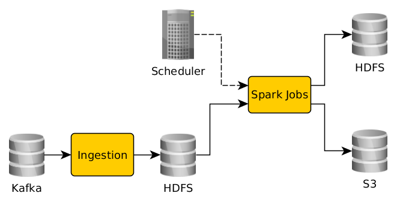
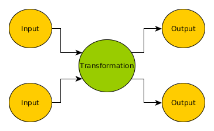
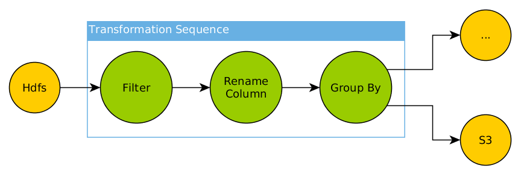
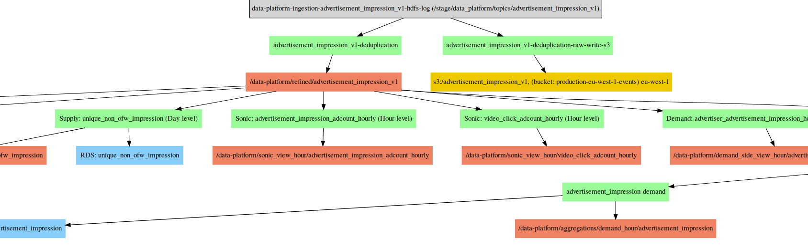

Graph DSLs (not-only) for Spark

About Us
Andreas Drobisch
Data Engineer
I like Scala and (free) food


AdTech, 1 BLN devices reachable, creating more than 2 BLN events per day
300+ people
Offices in Berlin, Israel, Bejing, New York, London, San Francisco
Ad Tech

We like


We are hiring (see the print-outs)
if interested, talk to us

Graph DSLs (not-only) for Spark
Graph definition
defines the kind of graph
defines a (un)-directed graph
Examples
Clothing dependencies for developers

German Cities

Other Examples
family tree
dependency tree
JIRA issue dependencies / relations
state machine transitions
Graph DSL s (not-only) for Spark
Domain Specific Language
"is a computer language that's targeted to a particular kind of problem, rather than a general purpose language that's aimed at any kind of software problem"
Martin Fowler
Commonly Known DSLs
SQL, CSS, RegEx
DSL flavors
internal / embedded : live inside a host language, allow to use host language to express domain statements
external / standalone : own syntax, need their own parser
can be mixed, resulting in tradeoffs in expressiveness
Running DSL programs
(embedded) interpreter
code generation
Functional interpreters / the Free monad can be considered embedded DSLs.
Great talk "Functional interpreters and you" from Dave Gurnell on that topic during Scala Days 2018 (Berlin).
Graph DSLs (not-only) for Spark
Spark
open-source (in-memory) cluster-computing framework
a big hammer in the data toolbox with SQL / Streaming / ML packages
created to overcome Hadoop Map-Reduce issues
mainly used for counting words

val textFile = sc.textFile("hdfs://...")
val counts = textFile.flatMap(line => line.split(" "))
.map(word => (word, 1))
.reduceByKey(_ + _)
counts.saveAsTextFile("hdfs://...")
Collection like interface
Using the Spark DataFrame API (examples from the Spark doc):
val df: DataFrame = spark.read.json("examples/src/main/resources/people.json")
// Displays the content of the DataFrame to stdout
df.show()
// +----+-------+
// | age| name|
// +----+-------+
// |null|Michael|
// | 30| Andy|
// | 19| Justin|
// +----+-------+
Select
// Select everybody, but increment the age by 1
df.select($"name", $"age" + 1).show()
// +-------+---------+
// | name|(age + 1)|
// +-------+---------+
// |Michael| null|
// | Andy| 31|
// | Justin| 20|
// +-------+---------+
Filter
// Select people older than 21
df.filter($"age" > 21).show()
// +---+----+
// |age|name|
// +---+----+
// | 30|Andy|
// +---+----+
Group
// Count people by age
df.groupBy("age").count().show()
// +----+-----+
// | age|count|
// +----+-----+
// | 19| 1|
// |null| 1|
// | 30| 1|
// +----+-----+
Domain Overview
Product

Needs to analyse KPIs for a complex product (15+ event types).
Lots of data (think TBs, not GB), needs to be aggregated .
Data Team
Needs to write code to get that data continously in a scala ble way.

https://www.xkcd.com/303
Basic Pipeline

1. Iteration - Just Code
data.select(groupCols: _*)
.withColumn("count", lit(1))
.groupBy(groupCols: _*)
.agg("count" -> "sum")
.withColumnRenamed("sum(count)", "count")
Write Scala Spark code for all the aggregations
Build some scripts and click around for scheduling jobs
Problems
Lacked clear separation between configuration / implementation of aggregations (hardcoded settings for output formats, mix-ups between outputs etc.)
Lots of manual configuration (mainly for Oozie, our scheduler at that time) and mismatches between stages
Understanding an aggregation needed inside knowledge of both the aggregation code and the involved configuration parts
creating, verifying and optimizing aggregations took a lot of time
Goals
Creating a new aggregation with already implemented logic should be a configuration task, not a coding task
Aggregations logic should be transparent , also for outsiders / non-developers
What can be automated , should be automated
Information about aggregations can easily be shared across several components
The Solution ™
All problems in computer science can be solved by another level of indirection
David Wheeler
So we build an abstraction...
Spark graph DSL
Basic pattern

Hello again IPO-Model / "EVA-Prinzip" .
Multiple IO



Transformation Nodes
Select
Filter
Group
Aggregation
...
Transformation Sequence

Graph Types
trait DataNode
trait InputNode extends DataNode
trait OutputNode extends DataNode
final case class HdfsPath(pathPattern: String) extends InputNode with OutputNode
final case class DataFlow(
source: DataNode,
target: DataNode,
label: Option[String]
) extends DirectedEdge[DataNode]
trait DataGraph extends Graph[DataNode, DataFlow]
Transformation Types
trait TransformationNode extends DataNode { def name: String }
final case class Filter(
name: String,
conditions: Seq[Condition]
) extends TransformationNode
final case class Group(
name: String,
groupColumns: Seq[String],
columnAggregations: Seq[ColumnAggregationSpec]
) extends TransformationNode
trait SparkTransformation extends DataFrameProvider => Try[DataFrame]
Simple Data Graph
val input = HdfsPath(...)
val hdfsOutput = ImpalaOutput(HdfsPath(...))
val mysqlOutput = MySQLOutput(topic, config = dbConfig)
val filtering = Filter(s"$topic-filter",
Seq(Equals("ad_source", "ad_marketplace"))
)
val grouping = Group(
s"$topic-group",
groupColumns = Seq("country", "ad_format")
)
val transformations = Transformations(s"$topic-transformation", Seq(filtering, grouping))
input ~> transformations
transformations ~> hdfsOutput
transformations ~> mysqlOutput
Interpretation of the graph
traverse the graph
transformation nodes are mapped to Scala functions
sequences are composed functions
Node Context
def inputs(node: DataNode, graph: DataGraph): Seq[InputNode] = graph.incoming(node).map(_.source).flatMap {
case input: InputNode => Some(input)
case impala: ImpalaOutput => Some(impala.data)
case _ => None
}.toSeq
def outputs(node: DataNode, graph: DataGraph): Seq[OutputNode] = graph.outgoing(node).map(_.target).flatMap {
case output: OutputNode => Some(output)
case _ => None
}.toSeq
Filter Implementation
case class FilteringTransformation(filtering: Filter) extends SparkTransformation
...
filtering.conditions.foldLeft(df) {
(dfAcc, condition) => dfAcc.filter(booleanColumnExpression(condition, dfAcc.columns))
}
Group Implementation
case class GroupingTransformation(grouping: Group) extends SparkTransformation
...
grouping.columnAggregations.foldLeft(Seq(aggregationColumn as countCol)) {
case (accAggregations, aggregation) => aggregation.aggregation match {
case Sum =>
accAggregations :+ sum(aggregation.column)
case Min =>
accAggregations :+ min(aggregation.column)
case Max =>
accAggregations :+ max(aggregation.column)
case Average =>
accAggregations :+ avg(aggregation.column)
case CountDistinct =>
accAggregations :+ countDistinct(aggregation.column)
case _ => accAggregations
}
}
Leveraging the abstraction
Scheduler
We decided to use Airflow which uses directed acyclic graphs (DAGs) to define the workflow.

Perfect fit for our Graph


But you have to use
python
 ...
...
Lets generate DAGs!
with DAG('some-spark', catchup=False) as dag:
run_latest_only = LatestOnlyOperator(task_id='run-spark-shell', dag=dag)
run = BashOperator(
task_id='run_spark',
bash_command=transformation_command,
on_failure_callback = lambda context: error_notification("error in job: ".format(ts = context["ts"]), context)
)
run.set_upstream(run_latest_only)
triggerNext1 = TriggerDagRunOperator(task_id = 'trigger_downstream1',
trigger_dag_id = "trigger_downstream1_dag",
python_callable = trigger,
dag=dag)
triggerNext1.set_upstream(run)
// graph.outgoing ...
triggerNext2 = TriggerDagRunOperator(task_id = 'trigger_downstream1',
trigger_dag_id = "trigger_downstream1_dag",
python_callable = trigger,
dag=dag)
triggerNext2.set_upstream(run)
...
Generated Diagram

Operations
We can just go over graph (which is the source of truth) and execute an action:
dataGraph.nodes.find(...).foreach { node =>
// do something awesome
}
Change the Flow
From
to


?
Problems
tends to get a leaky abstraction, how to finetune Spark operational (memory, executoros) aspects?
completeness of the abstraction (expression problem)
definining the graph can be tedious vs just using the Spark method
additional layer to maintain
Build your own graphs!
Free Ideas
graph that models firewall rules and creates the config
graph that documents your (µ-)services and converts it to markdown
something that you might want to edit / generate outside your code, but run as code
graphs library
https://github.com/flowtick/graphs
is a simple graph library for Scala and Scala.js, that we used to build our data graph.
The Spark part is not open-source
Why? (NIH?)
Wanted to use it in the browser (Scala.js)
GraphML support (for loading / saving from yed )
many libraries are more storage focused
Rúnar B. taught me to rewrite libraries in
Core Types
trait Edge[E, N] {
def value: E
def predecessors: Set[N]
def successors: Set[N]
}
trait Graph[N, E] {
def nodes: Set[N]
def edges: Set[Edge[E, N]]
def incoming(node: N): Iterable[Edge[E, N]]
def outgoing(node: N): Iterable[Edge[E, N]]
}
// edge typeclass
trait EdgeBuilder[N, E, B] {
def create(from: B)
(implicit identifiable: Identifiable[N]): Edge[E, N]
}
Pants again
Example
import com.flowtick.graphs.defaults._
import com.flowtick.graphs.defaults.directed._
val clothingDependencies = DefaultGraph.create(Seq(
n("Underpants") -> n("Pants"),
n("Pants") -> n("Coat"),
n("Pullover") -> n("Coat"),
n("Undershirt") -> n("Pullover"),
n("Pants") -> n("Shoes"),
n("Socks") -> n("Shoes")))
Supported Algorithms
Dijkstra (finds a shortest path in weighted graph)
Breadth-First Search (search for node level by level)
Depth-First Search (search for node path by path)
Topological Sorting (finds an ordering in a directed graph)
import com.flowtick.graphs.algorithm._
println(clothingDependencies.topologicalSort)
//
List(
DefaultNode(Socks),
DefaultNode(Undershirt),
DefaultNode(Pullover),
DefaultNode(Underpants),
DefaultNode(Pants),
DefaultNode(Shoes),
DefaultNode(Coat)
)
Inheritance vs type classes

implicit def edgeBuilder[N]: EdgeBuilder[N, DefaultEdge[N], (N, N)] = new EdgeBuilder[N, DefaultEdge[N], (N, N)] {
override def create(from: (N, N))
(implicit identifiable: Identifiable[N]): DefaultEdge[N] =
DefaultEdge(from._1, Some(from._2))
}
implicit def weightedEdgeBuilder[E, N, V, B]
(implicit edgeBuilder: EdgeBuilder[N, E, B]): EdgeBuilder = ...
cats
implicit def graphMonoid[N, E]: Monoid[Graph[N, E]] = new Monoid[Graph[N, E]] {
override def empty: Graph[N, E] = Graph.empty()
override def combine(x: Graph[N, E], y: Graph[N, E]): Graph[N, E] =
Graph[N, E](x.nodes ++ y.nodes, x.edges ++ y.edges)
}
Combined Graphs

project
is still in design exploration phase
contributions welcome !
tl;dr;
Graphs are proved useful for our data dependency and Spark transformation definitions
our abstraction helped to automate maintenance tasks, document our domain
not without problems ( abstractions deliver tradeoffs)
you can build your own graphs using
graphs

Thanks for coming.
 ,
,
 +
!
+
!